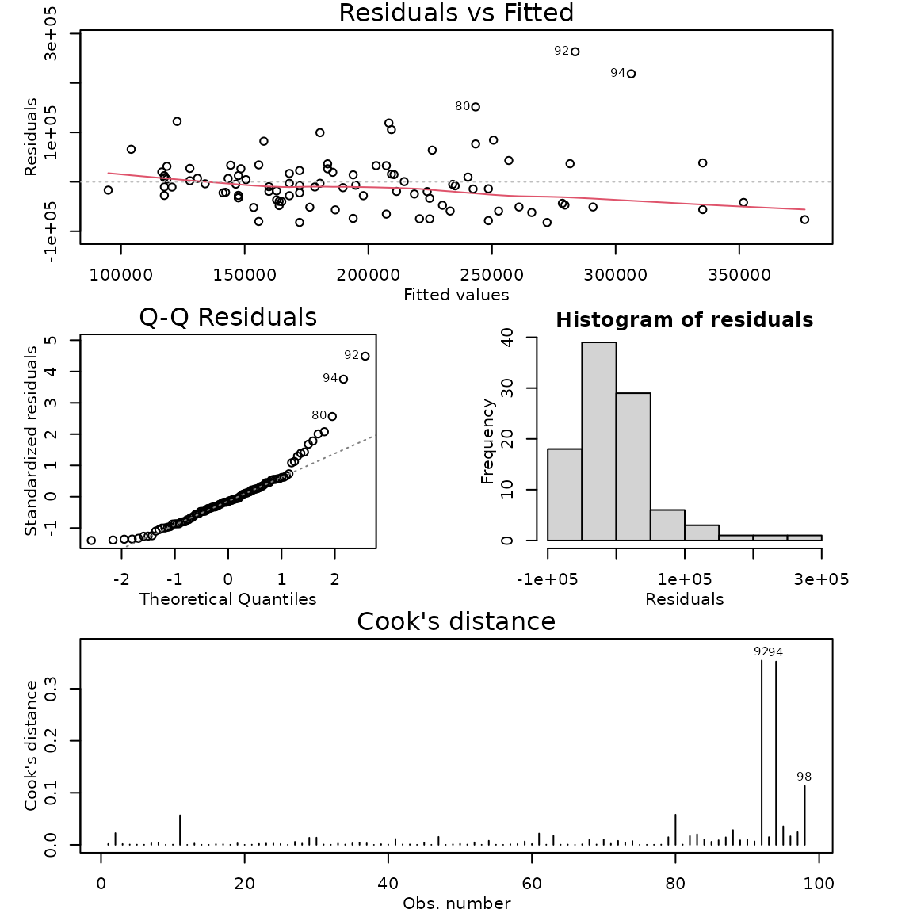
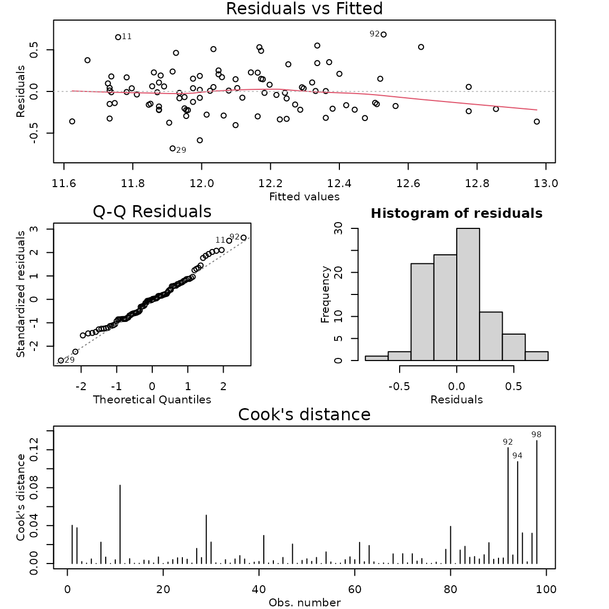

Case Study 6.5: STATS 201/8 Extra Case Study - Log-linear model
Source:vignettes/articles/CS6_5.Rmd
CS6_5.RmdQuestion 1
A real estate agent in Saratoga, New York, wishes to investigate how the sale price of houses is affected by the size of the house. In particular, what is the effect on price of an additional 20 m^2 in living area. We also want to compare prices for houses with living areas categorised as small and large and estimate what the expected house price for these two groups. She has compiled data from a random sample of 112 recent house sales in the city.
The dataset is stored in Houses.csv and includes variables:
| Variable | Description |
|---|---|
| price | sale price of house, in US dollars |
| livingArea | size of the living area of the house, in square metres |
| livingSpace | a factor classifying the size of the living area as either small if less than 170 square metres or large if greater. |
Disclaimer: Before you rush off to Saratoga to buy a house, this is an old data set. I’m afraid house prices have gone up a lot since this data was collected.
Instructions:
- Comment on the two plots of the data.
- Fit an appropriate model to the data. Check the model assumptions.
- Plot the data on the log scale with your appropriate model superimposed over it.
- Plot the data on the original scale with your appropriate model superimposed over it.
- Write appropriate Methods and Assumption Checks.
- Write an appropriate Executive Summary.
Question of interest/goal of the study
We wish to investigate how the prices of houses in Saratoga, New York, are affected by the size of the house. In particular, what is the effect on price of an additional 20 in living area.
Comment on the two plots of the data.
There is an increasing relationship between house price and living area. The initial plot shows that scatter increases for higher values of living area, but log-transforming the response variable in the second plot results in a relationship that looks reasonably linear with constant scatter
Fit model and check assumptions
houses.fit1 <- lm(price ~ livingArea, houses.df)
modelcheck(houses.fit1)
# Log the response variable and refit the model:
houses.fit2 <- lm(log(price) ~ livingArea, houses.df)
modelcheck(houses.fit2)
summary(houses.fit2)##
## Call:
## lm(formula = log(price) ~ livingArea, data = houses.df)
##
## Residuals:
## Min 1Q Median 3Q Max
## -0.68367 -0.19741 -0.00103 0.15295 0.68365
##
## Coefficients:
## Estimate Std. Error t value Pr(>|t|)
## (Intercept) 1.132e+01 7.930e-02 142.7 <2e-16 ***
## livingArea 4.943e-03 4.707e-04 10.5 <2e-16 ***
## ---
## Signif. codes: 0 '***' 0.001 '**' 0.01 '*' 0.05 '.' 0.1 ' ' 1
##
## Residual standard error: 0.2637 on 96 degrees of freedom
## Multiple R-squared: 0.5347, Adjusted R-squared: 0.5298
## F-statistic: 110.3 on 1 and 96 DF, p-value: < 2.2e-16
confint(houses.fit2)## 2.5 % 97.5 %
## (Intercept) 11.159985754 11.474808217
## livingArea 0.004009236 0.005877797## 2.5 % 97.5 %
## (Intercept) 70261.955239 96260.007176
## livingArea 1.004017 1.005895## 2.5 % 97.5 %
## 1.004017 1.005895## 2.5 % 97.5 %
## 0.4017283 0.5895105## 2.5 % 97.5 %
## 1.083487 1.124745## 2.5 % 97.5 %
## 8.348718 12.474455Methods and assumption checks
We have one numeric explanatory variable so have fitted a simple linear regression model to the data. However, we have clear evidence of increasing scatter as the living area increases so have logged the response variable price.
After logging price, the residuals looked much better. Normality looks good and no influential points were detected. We have a random sample, so the independence assumption is satisfied. Model assumptions are satisfied.
Our model is: , where
Our model explained 53.5% of the variability in the logged data.
Executive Summary.
We investigated how the prices of houses in Saratoga, New York, are affected by house size.
We found strong evidence that the median house price increases as the size of the living area increases.Furthermore, this relationship increases exponentially, so the greater the size of the living area, the bigger the increase.
We estimate that the median house price increases by between 8.3 and 12.5 for every 20 increase in living area.